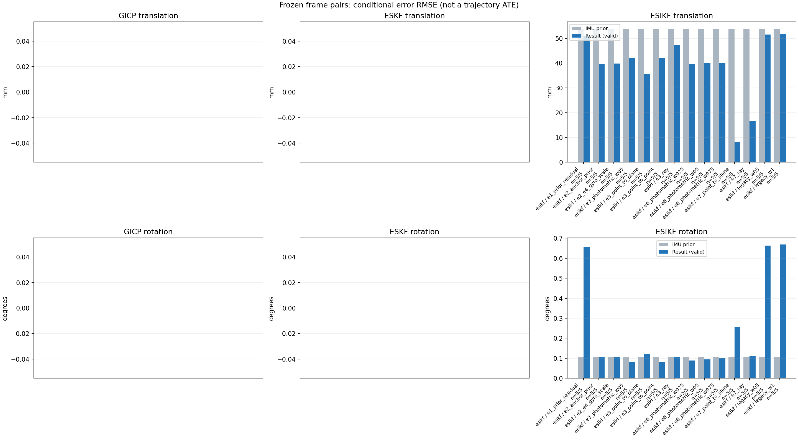

20261015_113028_roll_right · depth=disparity_cache · cache=32a9eed5ee535952fc7b
模型视差：/home/ubuntu22/slam/SIO_SLAM/models/tensorrt/disp_896x448_fp16.plan；engine SHA256=604cf6ac1f705c877260711730dd5d2d58c2a21f3020c03c668401ef7fb1e768。输入为生产裁剪与光照处理后的 RGB 0..255；此实验使用原始浮点像素视差，不应用完整前端的邻域视差后处理。
原始 ONNX SHA256：e9f49736a65d68d06681add463866b6defdf78fdd7f4f50f6cc941b682fdc0bc。
代价体图改写验证：ONNX Runtime 固定随机特征输入，最大绝对误差 0；该项检查图改写，完整模型精度仍需由录制数据评估。
配准代码版本：744ac2d993ae629b0cc44a3b1d995e04ab4fad48；观测生成版本：744ac2d993ae629b0cc44a3b1d995e04ab4fad48。
固定图像对与纯 IMU 先验；ESKF 回放固定 GICP 观测，ESIKF 直接读取点云。真值只用于此报告。
同时查看 converged 与 solver_status：上游默认 Stereo 在 max_iter / stopped_at_minimum 时也可能置 converged=true。valid 表示输入检查通过，不表示精度提升。欧氏 GICP 未提供独立的点距 RMSE，该列显示 NaN。
误差按每对图像的锚点计算，单位 m / degrees。此处 RMSE 不是全序列 ATE；末帧受同一锚点条件约束。NIS 与条件马氏距离是诊断量，少量相关图像对不能用于宣称协方差已校准。
全部指标 CSV · R / P / K 矩阵 CSV · Stereo 求解逐轮 CSV · ESIKF 逐轮 CSV · 配置快照 · 矢量图
unflagged 排除纯惯性先验平移误差超过 50 mm 的图像对；whitened 为误差按协方差白化后的每自由度均值，协方差与实际误差相符时约为 1。
| stage | method | variant | valid | total | result_translation_rmse_m | result_rotation_rmse_deg | result_translation_median_m | result_rotation_median_deg | result_translation_rmse_unflagged_m | result_rotation_rmse_unflagged_deg | improved_translation | improved_rotation | posterior_whitened_by_P_rot_mean | posterior_whitened_by_P_trans_mean |
|---|---|---|---|---|---|---|---|---|---|---|---|---|---|---|
| esikf | esikf | e1_prior_residual | 5 | 5 | 0.051065 | 0.65773 | 0.0081382 | 0.30137 | 0.0070131 | 0.24635 | 1 | 1 | 607.9 | 2503.3 |
| esikf | esikf | e2_anchor_prior | 5 | 5 | 0.039703 | 0.10634 | 0.0019306 | 0.0093933 | 0.0036631 | 0.11888 | 2 | 5 | 861.07 | 6862.3 |
| esikf | esikf | e2_e4_gyro_scale | 5 | 5 | 0.039857 | 0.10603 | 0.0021051 | 0.056188 | 0.005354 | 0.11853 | 2 | 3 | 38.797 | 6859.1 |
| esikf | esikf | e3_photometric_w05 | 5 | 5 | 0.042136 | 0.081757 | 0.0016167 | 0.0093018 | 0.0044257 | 0.091391 | 5 | 4 | 4.7841 | 119.79 |
| esikf | esikf | e3_point_to_plane | 5 | 5 | 0.035566 | 0.12233 | 0.0015994 | 0.0095617 | 0.0034731 | 0.13676 | 5 | 2 | 4.497 | 31.367 |
| esikf | esikf | e3_point_to_point | 5 | 5 | 0.04213 | 0.081731 | 0.0016165 | 0.0093024 | 0.0044461 | 0.091362 | 5 | 4 | 4.7819 | 120.01 |
| esikf | esikf | e3_ray | 5 | 5 | 0.047189 | 0.10711 | 0.0016119 | 0.0094788 | 0.0052506 | 0.11974 | 4 | 4 | 4.4118 | 27.884 |
| esikf | esikf | e6_photometric_w025 | 5 | 5 | 0.039574 | 0.088901 | 0.0014755 | 0.017499 | 0.0050312 | 0.099383 | 4 | 3 | 10.61 | 1700.3 |
| esikf | esikf | e6_photometric_w05 | 5 | 5 | 0.03994 | 0.094679 | 0.0014977 | 0.032278 | 0.0051878 | 0.10584 | 4 | 4 | 18.689 | 3481.8 |
| esikf | esikf | e6_photometric_w075 | 5 | 5 | 0.039876 | 0.10046 | 0.0016821 | 0.046409 | 0.0052664 | 0.1123 | 2 | 3 | 28.092 | 5173.3 |
| esikf | esikf | e7_point_to_plane | 5 | 5 | 0.0083177 | 0.25696 | 0.0012713 | 0.017979 | 0.0037326 | 0.28729 | 3 | 2 | 23.324 | 29.494 |
| esikf | esikf | e7_ray | 5 | 5 | 0.016569 | 0.11124 | 0.0011511 | 0.0094272 | 0.009507 | 0.12435 | 2 | 3 | 4.5833 | 137.71 |
| esikf | esikf | legacy_w05 | 5 | 5 | 0.051467 | 0.66336 | 0.0081769 | 0.19084 | 0.0059301 | 0.19522 | 3 | 2 | 306.87 | 1285.4 |
| esikf | esikf | legacy_w1 | 5 | 5 | 0.051766 | 0.66842 | 0.0081932 | 0.19101 | 0.0059633 | 0.19645 | 3 | 2 | 618.25 | 2572.7 |

| stage | case | method | variant | status | solver_status | inliers | converged | covariance_convention | covariance_from_hessian | fitness | registration_rmse_m | prior_trans_error_m | result_trans_error_m | prior_rot_error_deg | result_rot_error_deg | prior_flagged | R_rot_trace_rad2 | R_pos_trace_m2 | nis_regularized | posterior_whitened_by_P_rot | posterior_whitened_by_P_trans |
|---|---|---|---|---|---|---|---|---|---|---|---|---|---|---|---|---|---|---|---|---|---|
| esikf | static_start | esikf | legacy_w1 | updated | converged | 9346 | 1 | 1 | 0 | 0 | 7.6181e-05 | 0.0004161 | 0.0061233 | 0.013086 | 0 | 1.4895e-07 | 8.9459e-07 | nan | 0.23262 | 0.19022 | |
| esikf | static_start | esikf | legacy_w05 | updated | converged | 9346 | 1 | 1 | 0 | 0 | 7.6181e-05 | 0.00040077 | 0.0061233 | 0.013287 | 0 | 2.978e-07 | 1.7884e-06 | nan | 0.12736 | 0.092338 | |
| esikf | static_start | esikf | e1_prior_residual | updated | converged | 9346 | 1 | 1 | 0 | 0 | 7.6181e-05 | 0.00042026 | 0.0061233 | 0.013334 | 0 | 1.4895e-07 | 8.9463e-07 | nan | 0.24119 | 0.19436 | |
| esikf | static_start | esikf | e2_anchor_prior | updated | converged | 9346 | 1 | 1 | 0 | 0 | 7.6181e-05 | 9.2127e-05 | 0.0061233 | 0.0061146 | 0 | 1.4895e-07 | 8.9459e-07 | nan | 14.728 | 0.059017 | |
| esikf | static_start | esikf | e2_e4_gyro_scale | updated | converged | 9346 | 1 | 1 | 0 | 0 | 7.6181e-05 | 9.212e-05 | 0.0061233 | 0.0061145 | 0 | 1.4895e-07 | 8.9459e-07 | nan | 14.596 | 0.059 | |
| esikf | static_start | esikf | e6_photometric_w075 | updated | converged | 9346 | 1 | 1 | 0 | 0 | 7.6181e-05 | 8.4221e-05 | 0.0061233 | 0.0061189 | 0 | 1.9858e-07 | 1.1926e-06 | nan | 14.582 | 0.044461 | |
| esikf | static_start | esikf | e6_photometric_w05 | updated | converged | 9346 | 1 | 1 | 0 | 0 | 7.6181e-05 | 7.5971e-05 | 0.0061233 | 0.0061225 | 0 | 2.978e-07 | 1.7884e-06 | nan | 14.559 | 0.032155 | |
| esikf | static_start | esikf | e6_photometric_w025 | updated | converged | 9346 | 1 | 1 | 0 | 0 | 7.6181e-05 | 6.9963e-05 | 0.0061233 | 0.0061246 | 0 | 5.9522e-07 | 3.5734e-06 | nan | 14.52 | 0.023534 | |
| esikf | static_start | esikf | e7_ray | updated | converged | 9346 | 1 | 1 | 0 | 0 | 7.6181e-05 | 0.00012666 | 0.0061233 | 0.0061224 | 0 | 0.060255 | 6.9118e-05 | nan | 14.44 | 0.068585 | |
| esikf | static_start | esikf | e7_point_to_plane | updated | converged | 9346 | 1 | 1 | 0 | 0 | 7.6181e-05 | 0.00017683 | 0.0061233 | 0.0061716 | 0 | 1.5387e-06 | 5.0021e-06 | nan | 14.687 | 0.13801 | |
| esikf | static_start | esikf | e3_point_to_point | updated | converged | 9346 | 1 | 1 | 0 | 0 | 7.6181e-05 | 7.5179e-05 | 0.0061233 | 0.0061234 | 0 | 8.155e-06 | 5.2924e-05 | nan | 14.451 | 0.021875 | |
| esikf | static_start | esikf | e3_photometric_w05 | updated | converged | 9346 | 1 | 1 | 0 | 0 | 7.6181e-05 | 7.5175e-05 | 0.0061233 | 0.0061234 | 0 | 8.1509e-06 | 5.3007e-05 | nan | 14.451 | 0.021872 | |
| esikf | static_start | esikf | e3_ray | updated | converged | 9346 | 1 | 1 | 0 | 0 | 7.6181e-05 | 7.5379e-05 | 0.0061233 | 0.0061233 | 0 | 5.3345 | 0.0060375 | nan | 14.444 | 0.021545 | |
| esikf | static_start | esikf | e3_point_to_plane | updated | converged | 9346 | 1 | 1 | 0 | 0 | 7.6181e-05 | 7.2847e-05 | 0.0061233 | 0.0061245 | 0 | 7.5815e-05 | 0.00015081 | nan | 14.45 | 0.020196 | |
| esikf | sync_motion | esikf | legacy_w1 | updated | converged | 9740 | 1 | 1 | 0 | 0 | 0.00070607 | 0.0085398 | 0.0094797 | 0.34023 | 0 | 1.4443e-07 | 8.5533e-07 | nan | 270.7 | 83.48 | |
| esikf | sync_motion | esikf | legacy_w05 | updated | converged | 9739 | 1 | 1 | 0 | 0 | 0.00070607 | 0.0084635 | 0.0094797 | 0.33748 | 0 | 2.8886e-07 | 1.7107e-06 | nan | 134.52 | 41.313 | |
| esikf | sync_motion | esikf | e1_prior_residual | updated_not_converged | max_iterations | 9737 | 0 | 1 | 0 | 0 | 0.00070607 | 0.0081382 | 0.0094797 | 0.32772 | 0 | 1.4427e-07 | 8.5296e-07 | nan | 249.78 | 75.603 | |
| esikf | sync_motion | esikf | e2_anchor_prior | updated | converged | 9609 | 1 | 1 | 0 | 0 | 0.00070607 | 0.00078887 | 0.0094797 | 0.0093933 | 0 | 1.5016e-07 | 8.8945e-07 | nan | 31.811 | 3.6531 | |
| esikf | sync_motion | esikf | e2_e4_gyro_scale | updated | converged | 9621 | 1 | 1 | 0 | 0 | 0.00070607 | 0.00059521 | 0.0094797 | 0.056188 | 0 | 1.498e-07 | 8.9199e-07 | nan | 25.624 | 1.3331 | |
| esikf | sync_motion | esikf | e6_photometric_w075 | updated | converged | 9618 | 1 | 1 | 0 | 0 | 0.00070607 | 0.00060406 | 0.0094797 | 0.046409 | 0 | 1.9966e-07 | 1.1879e-06 | nan | 15.606 | 1.2477 | |
| esikf | sync_motion | esikf | e6_photometric_w05 | updated | converged | 9611 | 1 | 1 | 0 | 0 | 0.00070607 | 0.00057572 | 0.0094797 | 0.032278 | 0 | 3.001e-07 | 1.7821e-06 | nan | 6.6008 | 1.0072 | |
| esikf | sync_motion | esikf | e6_photometric_w025 | updated | converged | 9605 | 1 | 1 | 0 | 0 | 0.00070607 | 0.00059533 | 0.0094797 | 0.017499 | 0 | 6.0032e-07 | 3.5567e-06 | nan | 1.5674 | 0.9258 | |
| esikf | sync_motion | esikf | e7_ray | updated | converged | 9601 | 1 | 1 | 0 | 0 | 0.00070607 | 0.00072594 | 0.0094797 | 0.0094272 | 0 | 0.036181 | 3.457e-05 | nan | 0.27837 | 1.1219 | |
| esikf | sync_motion | esikf | e7_point_to_plane | updated | converged | 9604 | 1 | 1 | 0 | 0 | 0.00070607 | 0.00071308 | 0.0094797 | 0.017979 | 0 | 1.3832e-06 | 4.9561e-06 | nan | 1.1637 | 1.2252 | |
| esikf | sync_motion | esikf | e3_point_to_point | updated | converged | 9601 | 1 | 1 | 0 | 0 | 0.00070607 | 0.00069335 | 0.0094797 | 0.0093024 | 0 | 8.2377e-06 | 5.2616e-05 | nan | 0.28731 | 1.014 | |
| esikf | sync_motion | esikf | e3_photometric_w05 | updated | converged | 9601 | 1 | 1 | 0 | 0 | 0.00070607 | 0.00069332 | 0.0094797 | 0.0093018 | 0 | 8.2343e-06 | 5.2706e-05 | nan | 0.28728 | 1.0138 | |
| esikf | sync_motion | esikf | e3_ray | updated | converged | 9601 | 1 | 1 | 0 | 0 | 0.00070607 | 0.00070378 | 0.0094797 | 0.0094788 | 0 | 3.4198 | 0.0031457 | nan | 0.28143 | 1.0223 | |
| esikf | sync_motion | esikf | e3_point_to_plane | updated | converged | 9601 | 1 | 1 | 0 | 0 | 0.00070607 | 0.00070052 | 0.0094797 | 0.0095617 | 0 | 6.8603e-05 | 0.00014963 | nan | 0.28826 | 1.0199 | |
| esikf | main_motion | esikf | legacy_w1 | updated | converged | 12070 | 1 | 1 | 0 | 0 | 0.001643 | 0.0014183 | 0.075969 | 0.044248 | 0 | 1.1952e-07 | 8.8752e-07 | nan | 7.8262 | 2.6054 | |
| esikf | main_motion | esikf | legacy_w05 | updated | converged | 12070 | 1 | 1 | 0 | 0 | 0.001643 | 0.001419 | 0.075969 | 0.044277 | 0 | 2.39e-07 | 1.7746e-06 | nan | 3.9273 | 1.3048 | |
| esikf | main_motion | esikf | e1_prior_residual | updated_not_converged | max_iterations | 12112 | 0 | 1 | 0 | 0 | 0.001643 | 0.0042837 | 0.075969 | 0.30137 | 0 | 1.1767e-07 | 8.5864e-07 | nan | 194.54 | 25.163 | |
| esikf | main_motion | esikf | e2_anchor_prior | updated_not_converged | max_iterations | 12080 | 0 | 1 | 0 | 0 | 0.001643 | 0.0019306 | 0.075969 | 0.075354 | 0 | 1.1835e-07 | 8.6793e-07 | nan | 2179.9 | 17.171 | |
| esikf | main_motion | esikf | e2_e4_gyro_scale | updated_not_converged | max_iterations | 12088 | 0 | 1 | 0 | 0 | 0.001643 | 0.0021051 | 0.075969 | 0.10247 | 0 | 1.1854e-07 | 8.7021e-07 | nan | 29.726 | 7.3245 | |
| esikf | main_motion | esikf | e6_photometric_w075 | updated_not_converged | max_iterations | 12094 | 0 | 1 | 0 | 0 | 0.001643 | 0.0016821 | 0.075969 | 0.080061 | 0 | 1.5786e-07 | 1.1567e-06 | nan | 16.395 | 3.7229 | |
| esikf | main_motion | esikf | e6_photometric_w05 | updated | converged | 12092 | 1 | 1 | 0 | 0 | 0.001643 | 0.0014977 | 0.075969 | 0.060036 | 0 | 2.3647e-07 | 1.7315e-06 | nan | 9.3759 | 2.1806 | |
| esikf | main_motion | esikf | e6_photometric_w025 | updated | converged | 12076 | 1 | 1 | 0 | 0 | 0.001643 | 0.0014755 | 0.075969 | 0.048018 | 0 | 4.7535e-07 | 3.4983e-06 | nan | 5.3595 | 1.3428 | |
| esikf | main_motion | esikf | e7_ray | updated | converged | 12063 | 1 | 1 | 0 | 0 | 0.001643 | 0.0011511 | 0.075969 | 0.07638 | 0 | 0.023553 | 2.5635e-05 | nan | 3.0968 | 1.0581 | |
| esikf | main_motion | esikf | e7_point_to_plane | updated | converged | 12060 | 1 | 1 | 0 | 0 | 0.001643 | 0.0012713 | 0.075969 | 0.032177 | 0 | 1.2132e-06 | 5.0459e-06 | nan | 1.2401 | 1.2825 | |
| esikf | main_motion | esikf | e3_point_to_point | updated | converged | 12070 | 1 | 1 | 0 | 0 | 0.001643 | 0.0016165 | 0.075969 | 0.072857 | 0 | 6.544e-06 | 5.2506e-05 | nan | 3.4114 | 0.74813 | |
| esikf | main_motion | esikf | e3_photometric_w05 | updated | converged | 12070 | 1 | 1 | 0 | 0 | 0.001643 | 0.0016167 | 0.075969 | 0.072859 | 0 | 6.5415e-06 | 5.2599e-05 | nan | 3.412 | 0.7481 | |
| esikf | main_motion | esikf | e3_ray | updated | converged | 12070 | 1 | 1 | 0 | 0 | 0.001643 | 0.0016119 | 0.075969 | 0.075974 | 0 | 2.0428 | 0.0022074 | nan | 3.0637 | 0.70366 | |
| esikf | main_motion | esikf | e3_point_to_plane | updated | converged | 12070 | 1 | 1 | 0 | 0 | 0.001643 | 0.0015994 | 0.075969 | 0.074242 | 0 | 5.9792e-05 | 0.00015222 | nan | 2.9904 | 0.73697 | |
| esikf | main_motion_long | esikf | legacy_w1 | updated | converged | 12267 | 1 | 1 | 0 | 0 | 0.0098867 | 0.0081932 | 0.22748 | 0.19101 | 0 | 1.2839e-07 | 9.1788e-07 | nan | 125.25 | 79.555 | |
| esikf | main_motion_long | esikf | legacy_w05 | updated | converged | 12267 | 1 | 1 | 0 | 0 | 0.0098867 | 0.0081769 | 0.22748 | 0.19084 | 0 | 2.567e-07 | 1.8351e-06 | nan | 62.69 | 39.68 | |
| esikf | main_motion_long | esikf | e1_prior_residual | updated_not_converged | max_iterations | 12297 | 0 | 1 | 0 | 0 | 0.0098867 | 0.010582 | 0.22748 | 0.21059 | 0 | 1.2671e-07 | 9.0446e-07 | nan | 121.91 | 126.67 | |
| esikf | main_motion_long | esikf | e2_anchor_prior | updated_not_converged | max_iterations | 12227 | 0 | 1 | 0 | 0 | 0.0098867 | 0.0070226 | 0.22748 | 0.22522 | 0 | 1.3031e-07 | 9.3894e-07 | nan | 2074.4 | 127.25 | |
| esikf | main_motion_long | esikf | e2_e4_gyro_scale | updated_not_converged | max_iterations | 12302 | 0 | 1 | 0 | 0 | 0.0098867 | 0.010482 | 0.22748 | 0.20617 | 0 | 1.2689e-07 | 9.08e-07 | nan | 119.52 | 125.77 | |
| esikf | main_motion_long | esikf | e6_photometric_w075 | updated_not_converged | max_iterations | 12300 | 0 | 1 | 0 | 0 | 0.0098867 | 0.01038 | 0.22748 | 0.20456 | 0 | 1.6904e-07 | 1.2078e-06 | nan | 89.452 | 93.157 | |
| esikf | main_motion_long | esikf | e6_photometric_w05 | updated_not_converged | max_iterations | 12296 | 0 | 1 | 0 | 0 | 0.0098867 | 0.01025 | 0.22748 | 0.20031 | 0 | 2.5391e-07 | 1.8155e-06 | nan | 59.004 | 61.256 | |
| esikf | main_motion_long | esikf | e6_photometric_w025 | updated_not_converged | max_iterations | 12294 | 0 | 1 | 0 | 0 | 0.0098867 | 0.0099355 | 0.22748 | 0.19199 | 0 | 5.0822e-07 | 3.6348e-06 | nan | 29.044 | 29.736 | |
| esikf | main_motion_long | esikf | e7_ray | updated_not_converged | max_iterations | 12350 | 0 | 1 | 0 | 0 | 0.0098867 | 0.018965 | 0.22748 | 0.23642 | 0 | 0.0085951 | 9.4148e-06 | nan | 0.80265 | 92.269 | |
| esikf | main_motion_long | esikf | e7_point_to_plane | updated_not_converged | max_iterations | 12300 | 0 | 1 | 0 | 0 | 0.0098867 | 0.0073193 | 0.22748 | 0.57336 | 0 | 1.2458e-06 | 4.7952e-06 | nan | 95.14 | 18.953 | |
| esikf | main_motion_long | esikf | e3_point_to_point | updated_not_converged | max_iterations | 12261 | 0 | 1 | 0 | 0 | 0.0098867 | 0.0087161 | 0.22748 | 0.1672 | 0 | 7.0599e-06 | 5.4598e-05 | nan | 2.698 | 2.1154 | |
| esikf | main_motion_long | esikf | e3_photometric_w05 | updated_not_converged | max_iterations | 12263 | 0 | 1 | 0 | 0 | 0.0098867 | 0.0086744 | 0.22748 | 0.16726 | 0 | 7.0492e-06 | 5.457e-05 | nan | 2.7053 | 2.0975 | |
| esikf | main_motion_long | esikf | e3_ray | updated | converged | 12260 | 1 | 1 | 0 | 0 | 0.0098867 | 0.010353 | 0.22748 | 0.22683 | 0 | 0.92928 | 0.0011002 | nan | 0.7374 | 1.3886 | |
| esikf | main_motion_long | esikf | e3_point_to_plane | updated | converged | 12252 | 1 | 1 | 0 | 0 | 0.0098867 | 0.0067228 | 0.22748 | 0.263 | 0 | 6.3133e-05 | 0.00014921 | nan | 1.7129 | 1.1856 | |
| esikf | static_end | esikf | legacy_w1 | updated_not_converged | max_iterations | 9099 | 0 | 1 | 0 | 0 | 0.1201 | 0.11514 | 0.0045728 | 1.4421 | 1 | 1.782e-07 | 1.1169e-06 | nan | 2687.2 | 12698 | |
| esikf | static_end | esikf | legacy_w05 | updated_not_converged | max_iterations | 9105 | 0 | 1 | 0 | 0 | 0.1201 | 0.11447 | 0.0045728 | 1.431 | 1 | 3.5584e-07 | 2.2313e-06 | nan | 1333.1 | 6344.8 | |
| esikf | static_end | esikf | e1_prior_residual | updated_not_converged | max_iterations | 9116 | 0 | 1 | 0 | 0 | 0.1201 | 0.11332 | 0.0045728 | 1.3857 | 1 | 1.7781e-07 | 1.1168e-06 | nan | 2473 | 12289 | |
| esikf | static_end | esikf | e2_anchor_prior | updated_not_converged | max_iterations | 9101 | 0 | 1 | 0 | 0 | 0.1201 | 0.088477 | 0.0045728 | 0.0040091 | 1 | 1.7819e-07 | 1.0781e-06 | nan | 4.5417 | 34163 | |
| esikf | static_end | esikf | e2_e4_gyro_scale | updated_not_converged | max_iterations | 9101 | 0 | 1 | 0 | 0 | 0.1201 | 0.088478 | 0.0045728 | 0.0040079 | 1 | 1.7819e-07 | 1.0781e-06 | nan | 4.5217 | 34161 | |
| esikf | static_end | esikf | e6_photometric_w075 | updated_not_converged | max_iterations | 9105 | 0 | 1 | 0 | 0 | 0.1201 | 0.088542 | 0.0045728 | 0.0039647 | 1 | 2.3758e-07 | 1.4443e-06 | nan | 4.4218 | 25768 | |
| esikf | static_end | esikf | e6_photometric_w05 | updated_not_converged | max_iterations | 9096 | 0 | 1 | 0 | 0 | 0.1201 | 0.088705 | 0.0045728 | 0.0037197 | 1 | 3.5639e-07 | 2.1677e-06 | nan | 3.9061 | 17344 | |
| esikf | static_end | esikf | e6_photometric_w025 | updated_not_converged | max_iterations | 9090 | 0 | 1 | 0 | 0 | 0.1201 | 0.087916 | 0.0045728 | 0.0029836 | 1 | 7.2133e-07 | 4.409e-06 | nan | 2.5579 | 8469.3 | |
| esikf | static_end | esikf | e7_ray | updated_not_converged | max_iterations | 8870 | 0 | 1 | 0 | 0 | 0.1201 | 0.031799 | 0.0045728 | 0.0034484 | 1 | 0.013406 | 1.7302e-05 | nan | 4.2985 | 594.06 | |
| esikf | static_end | esikf | e7_point_to_plane | updated_not_converged | max_iterations | 9222 | 0 | 1 | 0 | 0 | 0.1201 | 0.017035 | 0.0045728 | 0.0037182 | 1 | 1.5799e-06 | 4.5189e-06 | nan | 4.3901 | 125.87 | |
| esikf | static_end | esikf | e3_point_to_point | updated_not_converged | max_iterations | 9067 | 0 | 1 | 0 | 0 | 0.1201 | 0.093786 | 0.0045728 | 0.003411 | 1 | 1.1211e-05 | 9.0942e-05 | nan | 3.0615 | 596.16 | |
| esikf | static_end | esikf | e3_photometric_w05 | updated_not_converged | max_iterations | 9067 | 0 | 1 | 0 | 0 | 0.1201 | 0.093803 | 0.0045728 | 0.0034131 | 1 | 1.1211e-05 | 9.119e-05 | nan | 3.0647 | 595.09 | |
| esikf | static_end | esikf | e3_ray | updated | converged | 9005 | 1 | 1 | 0 | 0 | 0.1201 | 0.10499 | 0.0045728 | 0.0036288 | 1 | 0.26875 | 0.0025291 | nan | 3.532 | 136.28 | |
| esikf | static_end | esikf | e3_point_to_plane | updated_not_converged | max_iterations | 9051 | 0 | 1 | 0 | 0 | 0.1201 | 0.079224 | 0.0045728 | 0.0034988 | 1 | 8.9617e-05 | 0.00019484 | nan | 3.0433 | 153.87 |